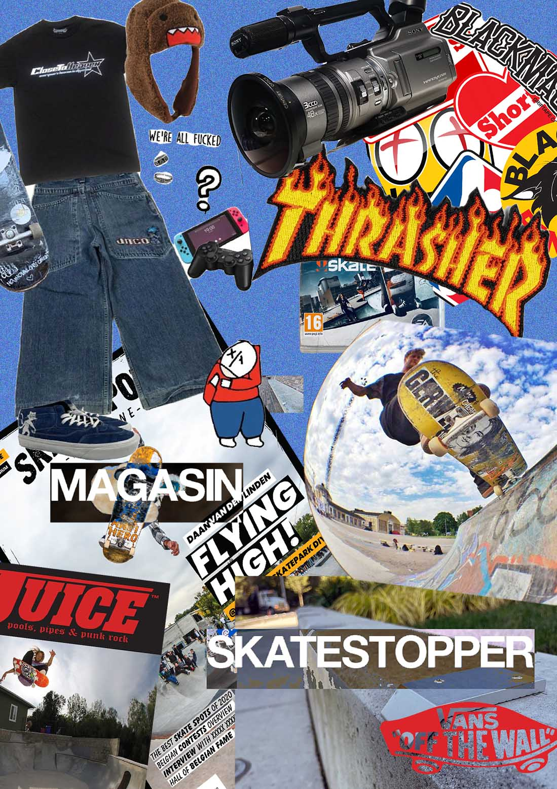
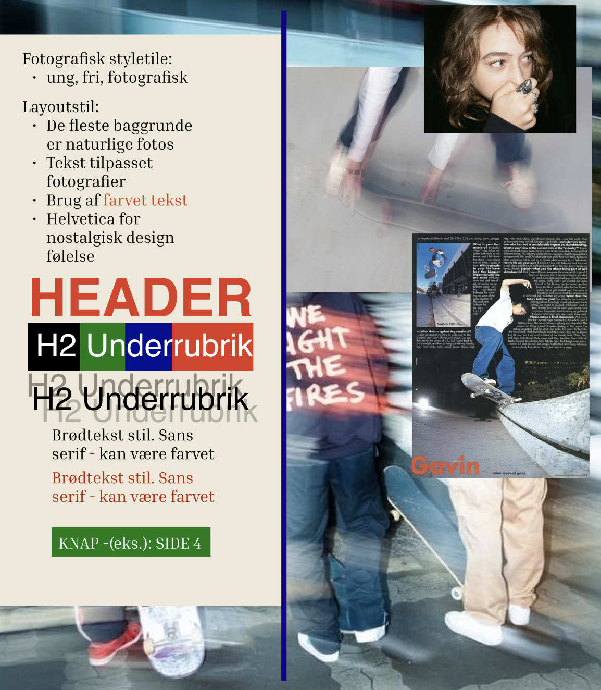
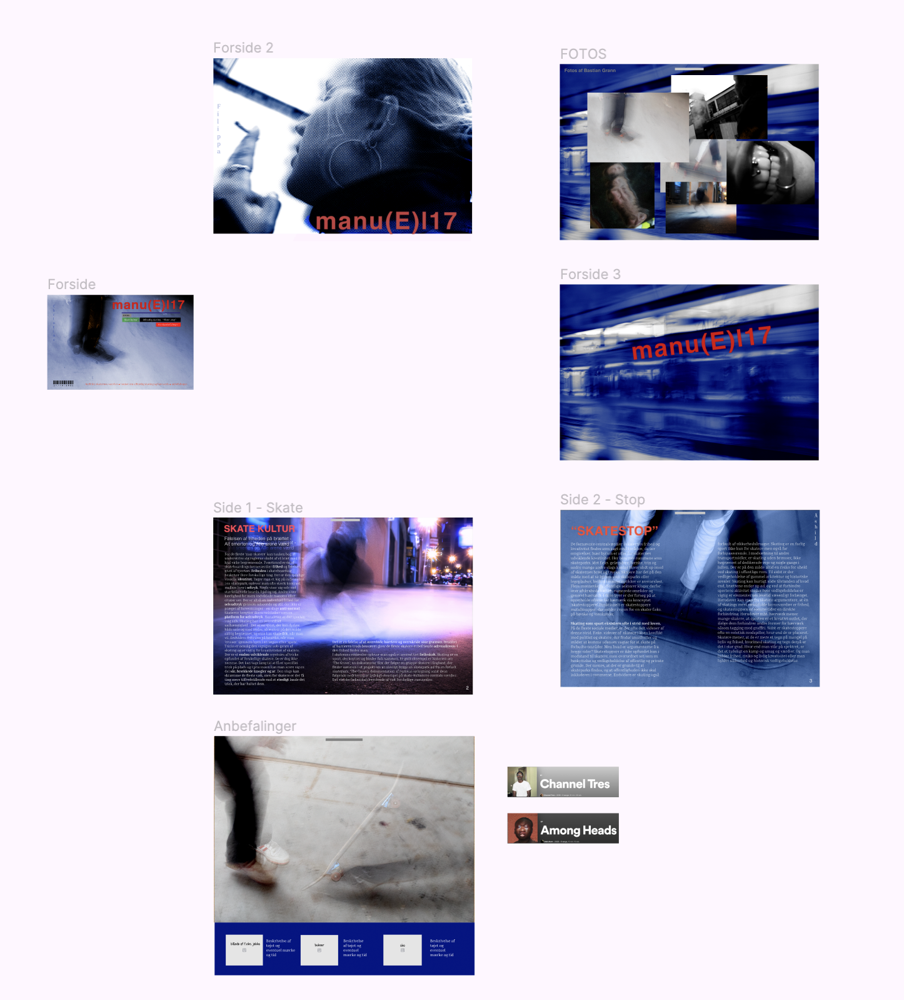
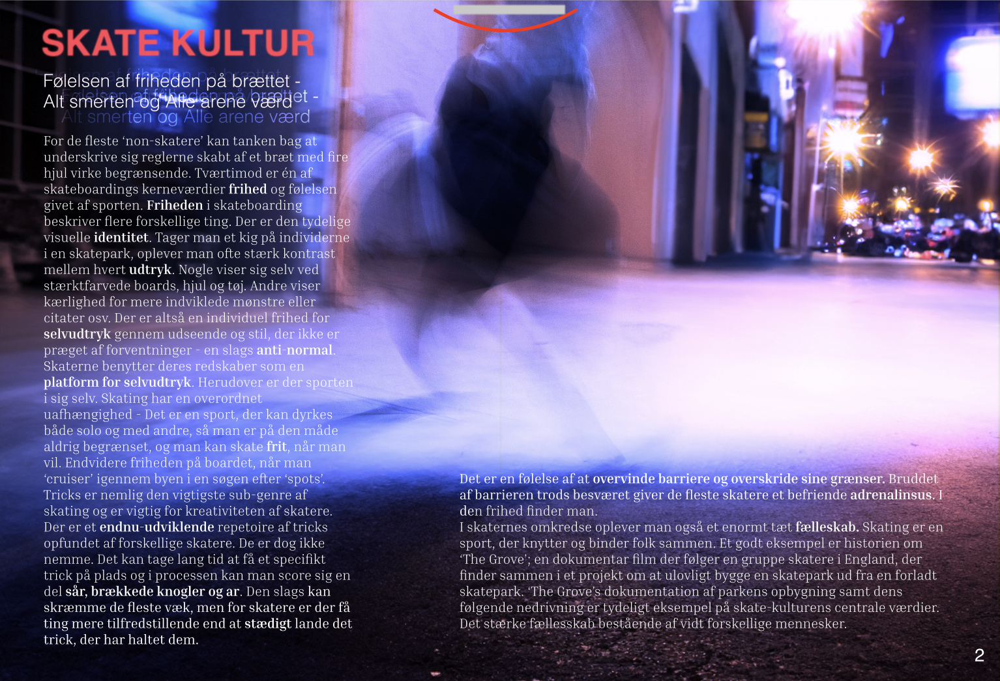

Tema 3
Tema 3's opgave var et 'passions-projekt'. Formålet var at bygge en hjemmeside fra bunden ud fra en passion, idé og problemstilling. Temeat gav en introduktion til egen idéudvikling og forsåelse af sammenhænen mellem bruger og elementer, herunder User Experience og User Interface design
MANU(EL)17 er et digitalt skatemagasin med designelementer inspireret af fysiske fotografimagasiner. Idéen om et fotografisk webmagasin om skate kultur var mit tætteste hug på min passion. Konceptet var en kombination af tre af mine tætteste interesser - altså fotografi, skating og magasin-design. I projektets start havde jeg to problemstillinger sat foran mig; Èn for læseren og en anden for min egen arbejdsprocess og formål. Læseren stod til at finde svaret på et spørgsmål om etikken af 'skatestoppere' i skaternes verden gennem websitets artikel - altså en in-site undersøgelse. Uden for sitet ville jeg finde en alternativ måde, at håndgribe digitale magasiner i moderne tid. Som fan af den designmæssige opsætning af magasiner, har jeg i lang tid lagt mærke til et skift i de fleste magsiners visuelle identitet i overgangen fra det fysiske magasin til den funktionelle website. Jeg ville udfordre det visuelle kompromis ved at skabe et digitalt magisin, hvor oplevelsen var tættere på den fysiske oplevelse.
Moodboard
Styletile
Ung - Fri - Fotografisk
hi fi prototype overview
Forside

Artikelsider
'Luk Funktion' - Inspireret af mobil træk knap. Funktionen vender tilbage til forsiden, og imiterer at lukke bladet.
Sitet er stadig ufærdigt, da der opstod problemer med forsidens endelige udseende og generelt utilfredstillende funtionalitet